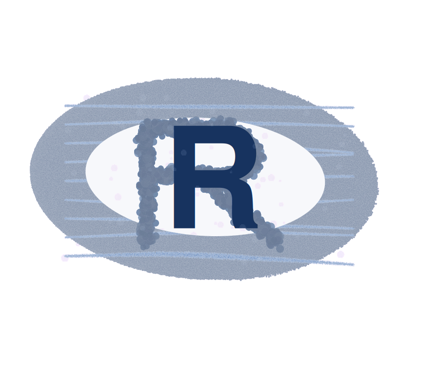
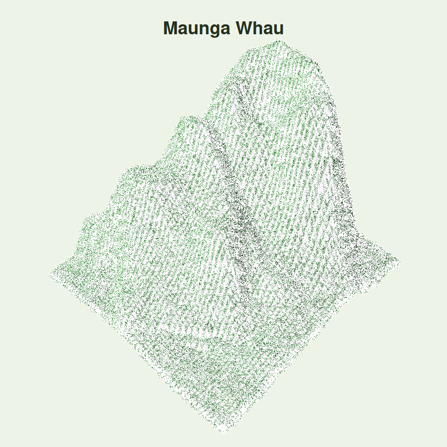
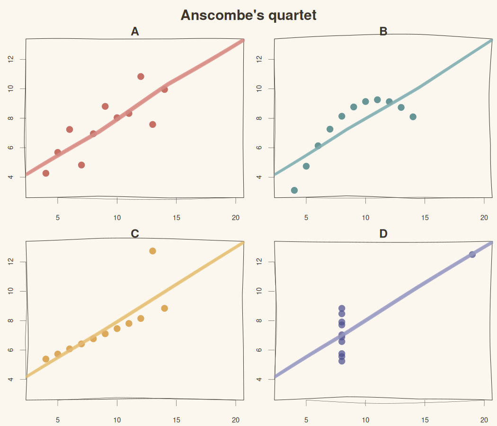
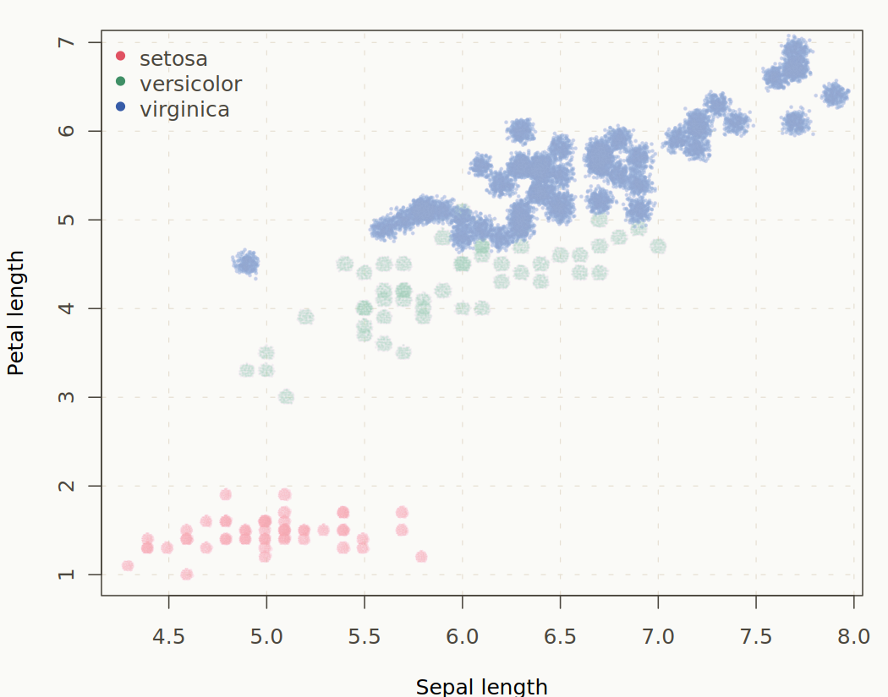
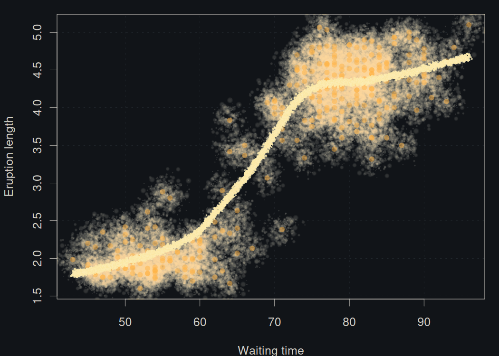
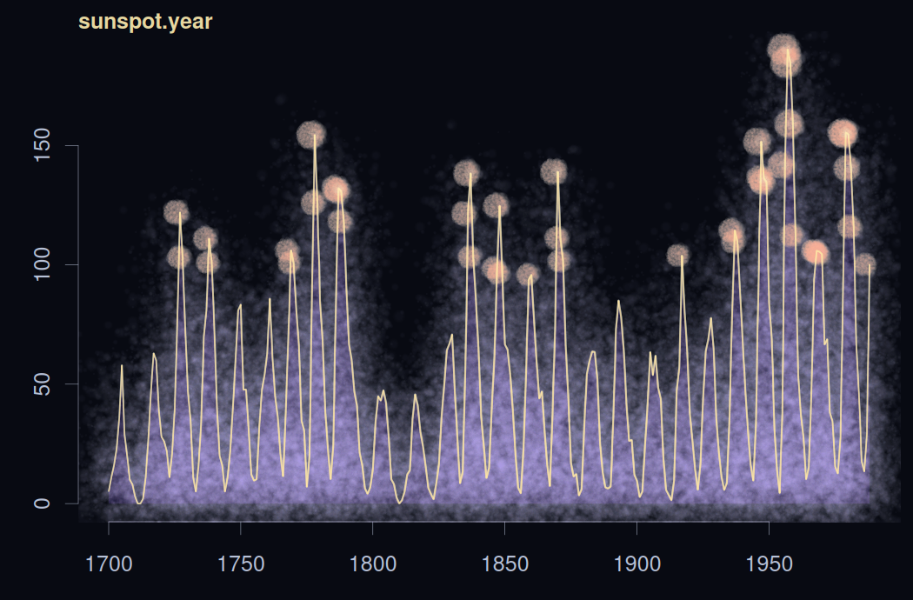
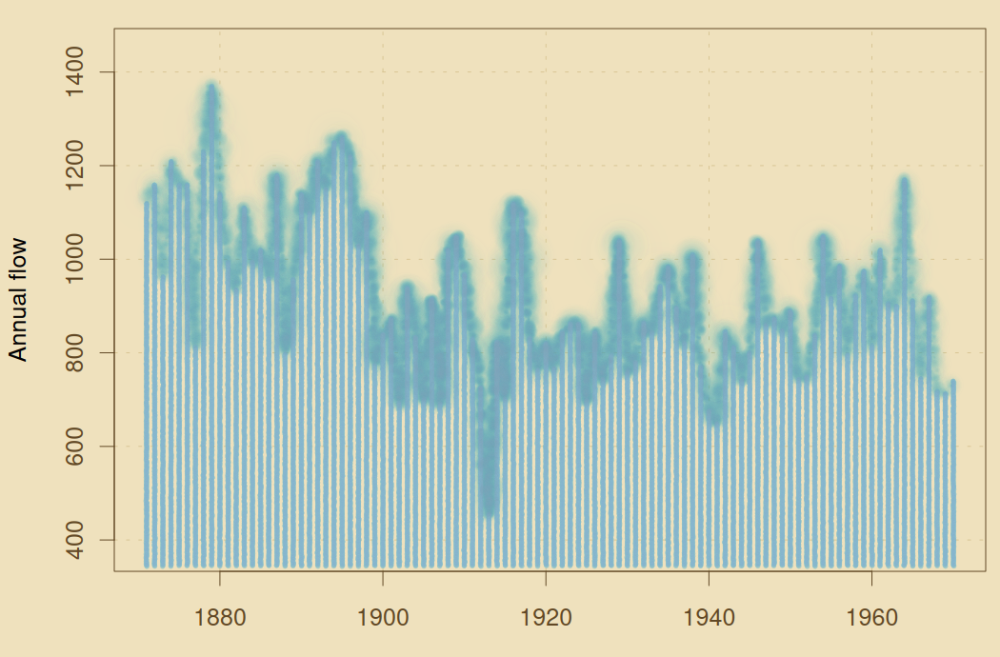
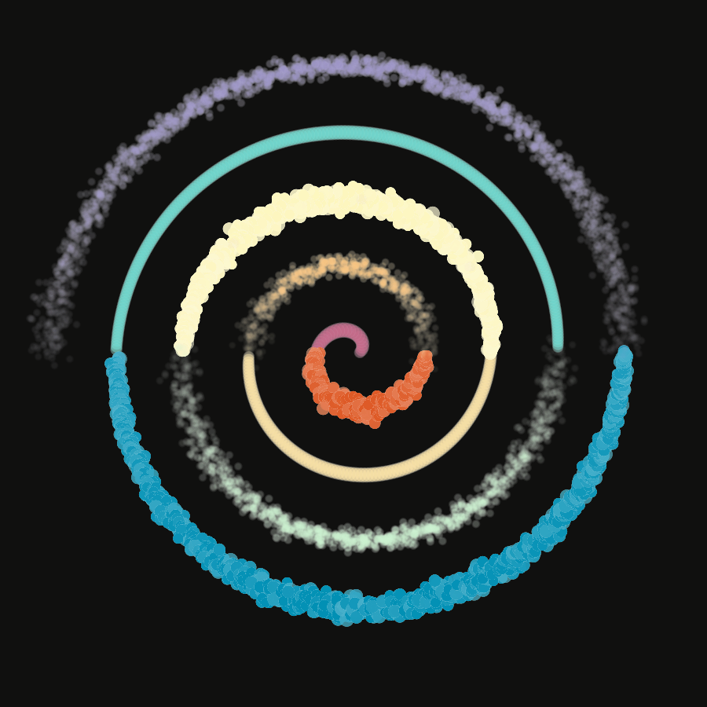
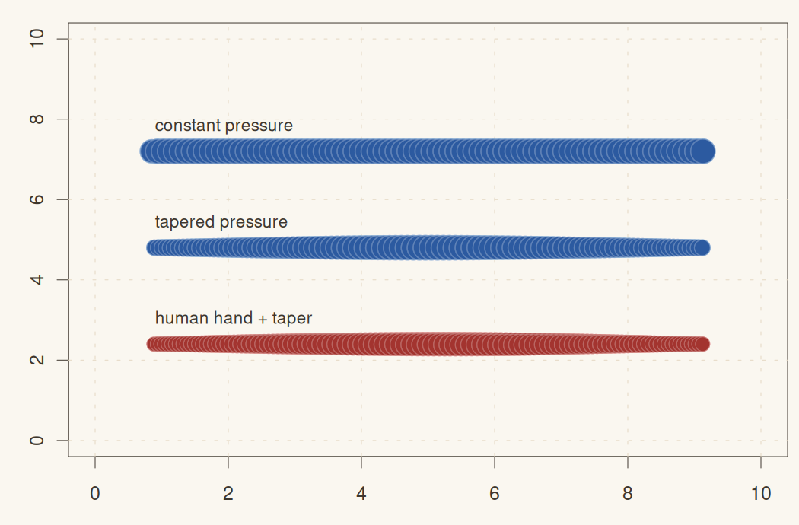
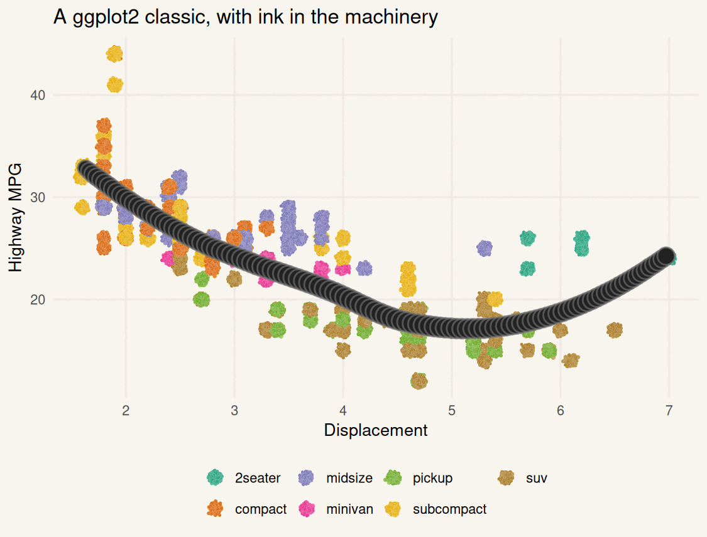

These examples take familiar R graphics and redraw them through
mypaintr. They use only base R, ggplot2, and
the package itself.

The logo becomes an ink-and-chalk construction rather than a clean vector mark.

The built-in volcano data rendered as a rough field map.

The classic four-panel warning, now with hand-drawn regression lines.

Fisher's iris data as a botanical field-note scatterplot.

A dark eruption study with a brushed loess curve.

The annual sunspot series treated like an astronomical trace.

A hydrological time series with papyrus colours and wet ink.

A simple polar curve turned into a small generative poster.

The same stroke logic with constant pressure, tapering, and a human hand.

A familiar ggplot scatterplot with mypaintr layers and theme elements.